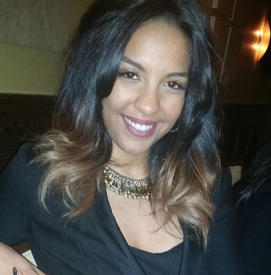

Sandra Duarte
Hi! My name is Sandra, I'm a creative professional - Lash Artist by day, and wannabe developer by night. I grew up in Piscataway, NJ and have travelled around the world and back. Since I've returned, I've become an entrepreneur and started my lash business. Given my past work experience with problem solving and supporting others at a company flowing with proprietary technology, I noticed a void in tech and resources for Lash Artists to easily find information in one place and sought to create a crowd sourcing platform with features similar to what we use on Yelp, Facebook, Google, Instagram, and others, but with results tailored to the lash culture.
Connect with Me